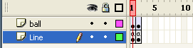

Flash Example - Rotate Using ActionScript
Timeline

ActionScript in frame 1
ball_object._x = ball_object._x + 10 ;
ball_object._rotation = ball_object._rotation + 22.93 ;
ActionScript in frame 2
if (ball_object._x < 470 ){
gotoAndPlay(1);
} else {
stop();
}
Notes
The
ball_object
is the instance name of the movie clip in this particular Flash example.
The
_x
property sets the x coordinate of the object
The
_rotation
property specifies the rotation of the object in degrees from its original orientation
Values from 0 to 180 represents clockwise rotation
Values from 0 to -180 represents counterclockwise rotation